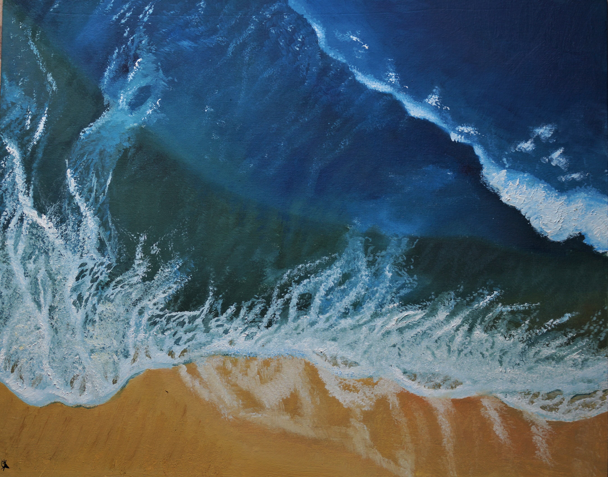
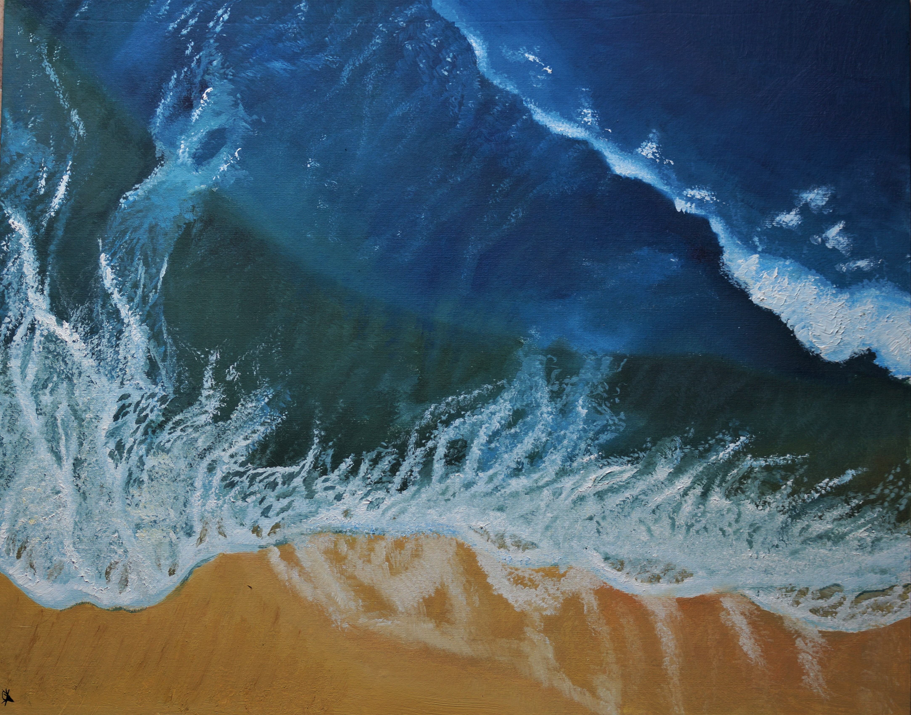

Море
 

 30.07.21 Холст на картоне 40х50, масло
Работая над данной картиной, мне хотелось, чтобы изображаемое было более
30.07.21 Холст на картоне 40х50, масло
Работая над данной картиной, мне хотелось, чтобы изображаемое было более
детализированным, чем в предыдущих работах. Я никогда не стремилась к
гиперреализму, но мне стало интересно попробовать изобразить тонкие детали.
Я не была на море, но во время создания этой картины, мне кажется, что я смогла
приблизиться к тому, чтобы почувствовать, что я нахожусь там. В композиции
картины читается динамика. Диагональное движение волн. Струящаяся морская
пена, напоминающая щупальца. Сочетание песочного и цвета морской волны.
Свежий морской бриз.